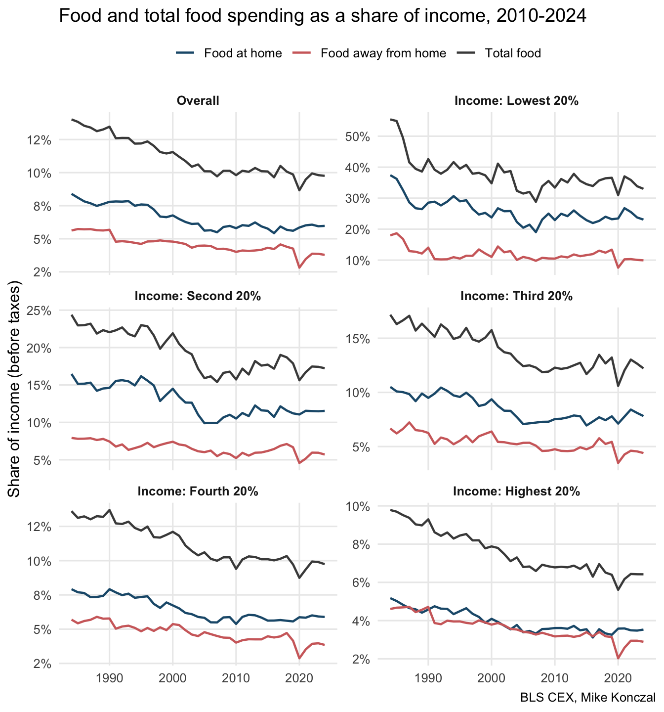

Show code
library(tidyverse)
cex <- read_csv("data/cex_data.csv")
cpi_rs <- read_csv("data/r-cpi-u-rs.csv") %>%
rename(year = Year, cpi_rs = Value)library(tidyverse)
cex <- read_csv("data/cex_data.csv")
cpi_rs <- read_csv("data/r-cpi-u-rs.csv") %>%
rename(year = Year, cpi_rs = Value)food_items <- c("Food at home", "Food away from home")
total_food_item <- "Food"
spending_palette <- c(
"Food at home" = "#1F5A7A",
"Food away from home" = "#D16B6B",
"Total food" = "#4A4A4A"
)
spending_levels <- c("Food at home", "Food away from home", "Total food")
food_detail <- cex %>%
filter(item_text %in% food_items) %>%
mutate(spending_type = item_text)
food_total <- cex %>%
filter(item_text == total_food_item) %>%
mutate(
item_text = "Total food",
spending_type = "Total food"
)
spending <- bind_rows(food_detail, food_total) %>%
mutate(spending_type = factor(spending_type, levels = spending_levels))
income <- cex %>%
filter(item_text == "Income before taxes") %>%
select(year, demographics_text, characteristics_text, income = value)
if (nrow(income) == 0) {
stop("Income before taxes not found in data/cex_data.csv. Regenerate the data with the income series included.")
}
spending_income_share <- spending %>%
left_join(income, by = c("year", "demographics_text", "characteristics_text")) %>%
mutate(share_income = value / income)
income_groups <- tibble(
group = c(
"Overall",
"Income: Lowest 20%",
"Income: Second 20%",
"Income: Third 20%",
"Income: Fourth 20%",
"Income: Highest 20%"
),
demographics_text = "Quintiles of income before taxes",
characteristics_text = c(
"All Consumer Units",
"Lowest 20 percent income quintile",
"Second 20 percent income quintile",
"Third 20 percent income quintile",
"Fourth 20 percent income quintile",
"Highest 20 percent income quintile"
)
)
age_levels <- c(
"Reference person under age 25",
"Reference person from age 25 to 34",
"Reference person from age 35 to 44",
"Reference person from age 45 to 54",
"Reference person from age 55 to 64",
"Reference person age 65 or over"
)spending_income_groups <- spending %>%
inner_join(income_groups, by = c("demographics_text", "characteristics_text")) %>%
filter(year >= 1990) %>%
mutate(group = factor(group, levels = income_groups$group))
spending_income_groups_last <- spending_income_groups %>%
group_by(group, spending_type) %>%
filter(year == max(year)) %>%
ungroup()
spending_income_groups_1990 <- spending_income_groups %>%
filter(year == 1990)
spending_income_groups_avg <- spending_income_groups %>%
filter(year %in% 2015:2019) %>%
group_by(group, spending_type) %>%
summarise(avg_2015_2019 = mean(percent_expenditure, na.rm = TRUE), .groups = "drop") %>%
mutate(label_x = 2017)
ggplot(spending_income_groups, aes(x = year, y = percent_expenditure, color = spending_type)) +
geom_line(linewidth = 0.8) +
geom_point(data = spending_income_groups_last, size = 1.6) +
geom_text(
data = spending_income_groups_last,
aes(label = scales::percent(percent_expenditure, accuracy = 0.1)),
vjust = -0.6,
size = 2.6,
show.legend = FALSE
) +
geom_point(data = spending_income_groups_1990, size = 1.6) +
geom_text(
data = spending_income_groups_1990,
aes(label = scales::percent(percent_expenditure, accuracy = 0.1)),
vjust = -0.6,
size = 2.6,
show.legend = FALSE
) +
geom_segment(
data = spending_income_groups_avg,
aes(
x = 2015,
xend = 2019,
y = avg_2015_2019,
yend = avg_2015_2019,
color = spending_type
),
linetype = "dotted",
linewidth = 0.6,
show.legend = FALSE
) +
geom_text(
data = spending_income_groups_avg,
aes(x = label_x, y = avg_2015_2019, label = scales::percent(avg_2015_2019, accuracy = 0.1)),
vjust = -1.0,
size = 2.6,
show.legend = FALSE
) +
scale_color_manual(values = spending_palette) +
scale_x_continuous(breaks = c(seq(1990, 2020, by = 5), 2024)) +
scale_y_continuous(
labels = scales::percent_format(accuracy = 1),
expand = expansion(mult = c(0.02, 0.12))
) +
facet_wrap(~ group, ncol = 3, scales = "free_y") +
labs(
title = "Food and total food spending as a share of consumption, 1990-2024",
x = NULL,
y = "Share of consumption",
color = NULL,
caption = "BLS CEX, Mike Konczal"
) +
theme_minimal(base_size = 12) +
theme(
legend.position = "top",
strip.text = element_text(face = "bold"),
panel.grid.minor = element_blank()
)
spending_income_groups_share <- spending_income_share %>%
inner_join(income_groups, by = c("demographics_text", "characteristics_text")) %>%
mutate(group = factor(group, levels = income_groups$group))
ggplot(spending_income_groups_share, aes(x = year, y = share_income, color = spending_type)) +
geom_line(linewidth = 0.8) +
scale_color_manual(values = spending_palette) +
scale_y_continuous(labels = scales::percent_format(accuracy = 1)) +
facet_wrap(~ group, ncol = 2, scales = "free_y") +
labs(
title = "Food and total food spending as a share of income, 2010-2024",
x = NULL,
y = "Share of income (before taxes)",
color = NULL,
caption = "BLS CEX, Mike Konczal"
) +
theme_minimal(base_size = 12) +
theme(
legend.position = "top",
strip.text = element_text(face = "bold"),
panel.grid.minor = element_blank()
)
spending_age_share <- spending_income_share %>%
filter(demographics_text == "Age of reference person", year >= 2010) %>%
mutate(age_group = factor(characteristics_text, levels = age_levels)) %>%
filter(!is.na(age_group))
ggplot(spending_age_share, aes(x = year, y = share_income, color = spending_type)) +
geom_line(linewidth = 0.8) +
scale_color_manual(values = spending_palette) +
scale_y_continuous(labels = scales::percent_format(accuracy = 1)) +
facet_wrap(~ age_group, ncol = 2, scales = "free_y") +
labs(
title = "Food and total food spending as a share of income by age, 2010-2024",
x = NULL,
y = "Share of income (before taxes)",
color = NULL,
caption = "BLS CEX, Mike Konczal"
) +
theme_minimal(base_size = 12) +
theme(
legend.position = "top",
strip.text = element_text(face = "bold"),
panel.grid.minor = element_blank()
)
food_budget_real <- cex %>%
filter(item_text %in% c("Food at home", "Food away from home")) %>%
filter(!is.na(total_expend), !is.na(value)) %>%
mutate(
item_text = factor(item_text, levels = c("Food at home", "Food away from home")),
budget_share = value / total_expend
) %>%
left_join(cpi_rs, by = "year") %>%
mutate(real_total_expend = total_expend / (cpi_rs / 100)) %>%
filter(!is.na(real_total_expend))
ggplot(food_budget_real, aes(x = real_total_expend, y = budget_share, color = item_text)) +
geom_point(alpha = 0.35, size = 1.2) +
geom_smooth(method = "loess", se = FALSE, linewidth = 0.9) +
scale_color_manual(values = c("Food at home" = "#1F5A7A", "Food away from home" = "#D16B6B")) +
scale_y_continuous(labels = scales::percent_format(accuracy = 0.1)) +
labs(
title = "Food budget shares vs real total expenditures (Dec 1977 dollars)",
x = "Real total expenditures (Dec 1977 dollars)",
y = "Budget share",
color = NULL,
caption = "BLS CEX, Mike Konczal"
) +
theme_minimal(base_size = 12)